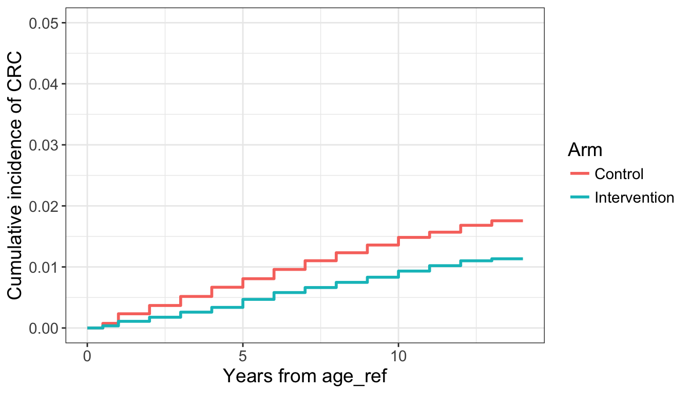

We wish to validate our estimate of the risk of colorectal cancer (crc), so our outcome of interest is time until crc diagnosis.
The outcome was constructed as follows:
t2dth - age_ref)age_dxsel - age_ref)The survival time for each observation was taken to be the minimum of the two above times.
Question: there are 31 people that had cause of death (dthc) as ‘colorectal’ cancer but were not diagnosed with crc. I count these as a CRC dx case.
We remove 189 crc cases and 2181 advanced adenomas from the intervention arm detected in the first year of screening.
There are several competing events that we must account for including adenoma, hyperplastic polyps, … (??) and death. Below we show cumulative incidence curves for crc and competing events in the PLCO trial over the first 14 years. The dashed line shows the probability of CRC calculated using a Kaplan Meier curve, ignoring competing events.
| Censored | CRC | Other or Death |
|---|---|---|
| 123774 | 2188 | 26506 |

Age is categorized as \(\leq\) 60, 60-65, 65-70, and 70+.